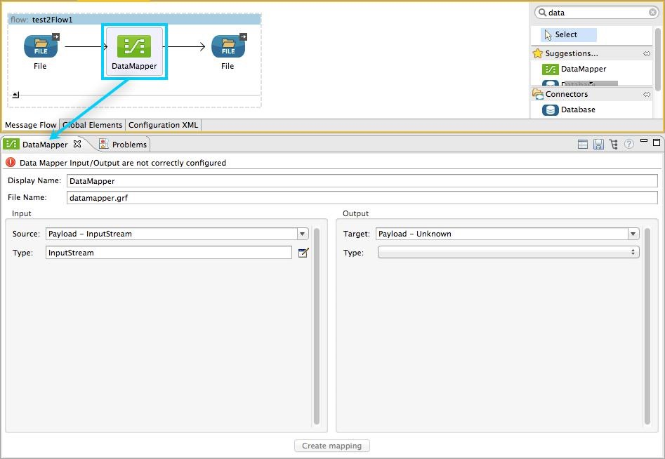
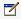
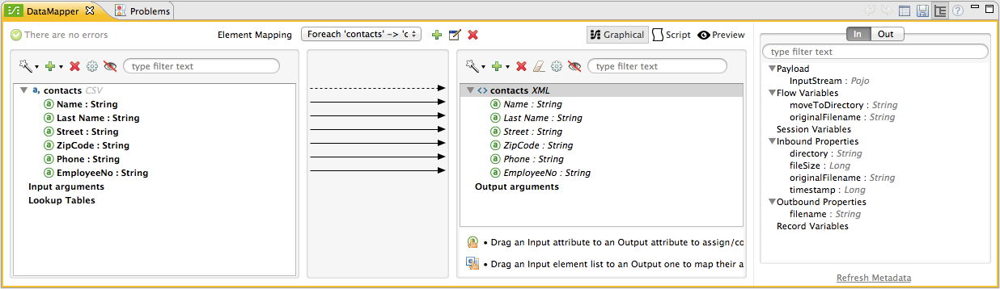
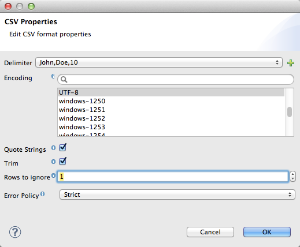
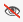
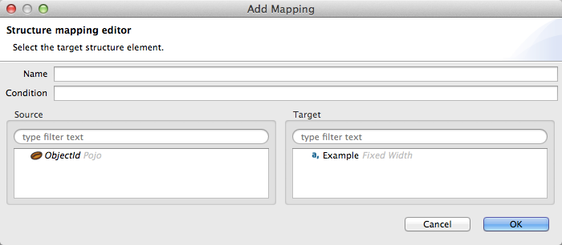
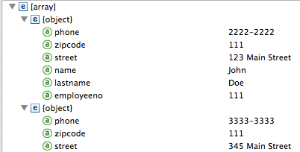
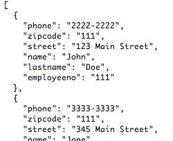

Anypoint DataMapper Visual Reference
|
DataMapper will continue to be fully supported in all current and future versions of Mule ESB 3.x, however it will be removed in Mule 4.0 in favour of the Transform Message component (based on DataWeave code). We recommend that if you wish to take advantage of the new capabilities of DataWeave or if you start new projects, upgrade now. A migration tool is now included in Studio, which assists in converting a DataMapper map to DataWeave. Right click on a DataMapper, select Migrate to DataWeave, and follow the instructions. 
If you don’t see DataMapper on your palette, you can enable it by going to Preferences → Anypoint Studio → Palette Profiles and ticking the checkbox Show deprecated Mule Components and Attributes. |
This page contains annotated images of all of the major views used in Anypoint DataMapper. It is meant as a reference for the discussions in the rest of the DataMapper documentation, to help identify each control in the UI.
DataMapper Configuration Overview
To use a DataMapper transformer in your application, you perform the following high-level tasks:
-
Drag a DataMapper transformer from the Studio Palette to the canvas, and place it in the desired location in your flow.
-
Click the DataMapper transformer in the flow. Studio will display the DataMapper properties editor, shown below.
 -
Define the input and output properties for your mapping (this step is required for actually creating the mapping). The required tasks are:
-
Define the Source of your input data.
-
Define the Type for your input data.
-
Define the Target for your output data.
-
Define the Type for your output data.
-
To define the type for your input data, click the edit icon
 or the drop-down menu to the right of the Type input field. DataMapper displays a mapping configuration view according to the input type you selected. The image below displays the configuration view for input type CSV.
Using this window, you define the input and output mapping properties, including data types and fields (for details, see Defining DataMapper Input and Output Metadata).
-
After defining the mapping properties, click the Create mapping button at the bottom of the editor. The properties editor becomes the graphical mapping editor, shown below, in which you can define your data mapping proper.
 -
Define your mapping, adjusting or mapping fields as necessary.
DataMapper Properties Editor Overview
The image below describes the different icons, indicators and tools in DataMapper’s properties editor. For a description of each item, consult the numbered table below the image.
For details on creating your mapping, see Defining DataMapper Input and Output Metadata.
Notice the Create mapping button at the bottom of the image above. The button is grayed-out; it will be available only after you have defined the input and output parameters for your mapping.
| Number | Description |
|---|---|
1 |
Display name input field. Defines the name for this DataMapper in the application flow as shown in the Studio canvas. |
2 |
File name input field. Defines the name of the file that contains the data mapping. |
3 |
Input source drop-down menu. By default, DataMapper takes its input from the message payload. Click to select another input source; you can select from several message properties or flow variables. |
4 |
Input type input field. Click the edit icon or the drop-down menu to the right of the input field to select the input type. This will cause the input pane to change allowing you to select between the available types for input data. |
5 |
Output target input field. The default is the message payload. Select between payload or available properties, or write your own expression. |
6 |
Output type drop-down menu. Click to select between the available types for output data. |
7 |
Inbound/outbound properties view selector, available when the metadata view is enabled (see below). |
8 |
Sidepanel view selector and config icons. Use these icons to:
|
9 |
Input or output properties, selectable with the inbound/outbound properties view selector (item 7 in this table) |
Overview of the Graphical Mapping Editor
The image below describes the different icons, indicators and tools in DataMapper’s graphical mapping editor. For a description of each item, consult the numbered table below the image.
For details on defining your mapping, see Defining DataMapper Input and Output Metadata.
| Number | Description | ||
|---|---|---|---|
1 |
Infer Metadata tool for input metadata. Click to reload or recreate your mapping’s input metadata without having to reconfigure your mapping flow from scratch. See Defining DataMapper Input and Output Metadata for details. |
||
2 |
Add tool for input data. Click to add elements to the mapping, including:
|
||
3 |
Remove Selected Field ** tool. Select a field, then click the tool to remove the selected field. |
||
4 |
Input Properties tool. Click to open the Properties configuration window. Configurable properties will vary according to the input type. The image below shows the Properties configuration window.

|
||
5 |
Show/Hide Unrelated Elements tool. Default position is open, showing the hide icon .
|
||
6 |
Input pane Search Filter. Type a string to display only elements in the input data that contain the string. |
||
7 |
Current Element Mapping indicator/drop-down menu. Indicates the currently-displayed mapping level for multiple-level data mappings such as nested lists. The drop-down menu allows you to instantly switch between mapping levels. |
||
8 |
Add Mapping icon: Click to add a new mapping. DataMapper displays the Structure mapping editor configuration window, displayed below.

In the Name field, type a descriptive name for the new mapping. In the Condition field, type an optional XPath condition. If you define a condition, the mapping will only process source elements that match the condition.
For more information on structured mapping, see Example: Flat-to-Structured and Structured-to-Flat Mapping. |
||
9 |
Edit Mapping tool. Click to modify the name of the current mapping level. |
||
10 |
Remove Mapping tool. Click to remove the current mapping level. |
||
11 |
Infer Metadata tool for output metadata. Click to reload or recreate your mapping’s output metadata without having to reconfigure your mapping flow from scratch. See Defining Input and Output Metadata for details. |
||
12 |
Add tool for output data. Click to add a metadata field to the output mapping. |
||
13 |
Remove Selected Field ** tool. Select a field, then click the tool to remove the selected field. |
||
14 |
Click Field Assignments tool. Click to delete the selected field(s) assigned input values. To clear the values of multiple fields, select the fields by clicking the first field, holding down the |
||
15 |
Output Properties tool. Click to open the Properties configuration window. Configurable properties will vary according to the input type. Shown here are |
||
16 |
Show/Hide Unrelated Elements tool. Default position is open, showing the hide icon .
|
||
17 |
Output pane Search Filter. Type a string to display only elements in the output data that contain the string. |
||
18 |
Graphical view button. Click to display DataMapper’s graphical view, displayed by default and illustrated in Overview of the Graphical Mapping Editor. |
||
19 |
Script view button. Click to display DataMapper’s script view. For details, see Overview of the Script View. |
||
20 |
Preview button. Click to display DataMapper’s preview pane, where you can run a preview of your mapping. For details, see Overview of DataMapper Preview. |
Overview of the Script View
| Number | Description |
|---|---|
1 |
Field nav pane filter box. Type a string to see only fields whose names contain that string. |
2 |
Input and output information pane. Here you can access information about input and output fields and arguments, lookup tables, and default functions. You can also insert an input or output field or a function into the script by click-and-dragging the function from the information pane to the script editor. |
3 |
Current Element Mapping indicator/drop-down menu. Indicates the currently-displayed mapping level for multiple-level data mappings such as nested lists, and allows you to select which mapping level to view and edit. |
4 |
Script view button. Click to select the Script view. |
5 |
Input or output properties, selectable with the inbound/outbound properties view selector. |
6 |
Script editor. Click anywhere in the script to edit. |
7 |
Default Functions in the input and output information pane. To insert a function into the script, click and drag the function to the desired location in the script editor. |
Overview of DataMapper Preview
DataMapper’s preview feature allows you to test your mapping using a specific input file and preview the results. For details, see Previewing DataMapper Results on Sample Data.
| Number | Description |
|---|---|
1 |
Input Data input field. Use to select the path of the file to read data from. Alternatively, click the folder button to the right of the field to select the file using your system’s file browser. |
2 |
Text / Graphic View selector. Click to switch between graphic view (default, below left) and text view (below right).   |
3 |
Folder icon for selecting the input file. Click to select the file using your system’s file browser. |
4 |
New input file icon. Click to create a new input file and save it to disk. The default location for the file is inside your application’s folder tree. After creating a new input file, you can click it in the package explorer to edit it inside Studio. |
5 |
Input Arguments button. Click to enter input arguments for your preview (for details, see "Using Data Mapping Input and Output Arguments" in Building a Mapping Flow in the Graphical Mapping Editor). |
6 |
Run button. Click to run a preview of your mapping and display the results. |
7 |
Preview button. Click to display the Preview. |
8 |
Input or output properties, selectable with the inbound/outbound properties view selector. |
9 |
Preview results pane. Displays the results of the preview in graphic or text format. |
The DataMapper Configuration View
The / buttons to the right of the graphical mapping editor allow you to toggle between the mapping view and the DataMapper configuration view. The configuration view allows you to quickly configure global parameters for your specific DataMapper transformer.
| Number | Description |
|---|---|
1 |
Display name input field. Defines the name for this DataMapper in the application flow as shown in the Studio canvas. |
2 |
Drop-down menu for referencing any of the mapping files (ending in .grf) available in the application. By default, the mapping file created for this specific DataMapper is referenced. Selecting another mapping file will causes the DataMapper transformer to replicate the mapping in the referenced file. |
3 |
Operation selector drop-down menu. In most cases, only the default |
4 |
Input source input field. Here you can use Mule Expression Language to select an input source other than the message payload, such as message inbound properties, ID, etc.). |
5 |
Output target input field. Here you can use an enricher expression to enrich the current message with the result of DataMapper processing. |
6 |
Return class input field. Enter the class name of the expected output. |
7 |
Streaming checkbox. Click to enable streaming on this DataMapper. For details on streaming, see Streaming Data Processing with DataMapper. |
8 |
Pipe size input field for streaming. Defines the size of the streaming cache. Default is 2048 bytes when working with files, or 2048 elements when working with collections. |
9 |
Input arguments field generator/editor. Use to add input arguments to the mapping. For details, see "Using Data Mapping Input and Output Arguments" in Building a Mapping Flow in the Graphical Mapping Editor. |